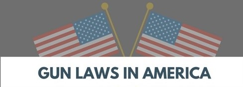

What Influence Does Media Have On Us and Our Perspective?
*******Page to be finished when research is done. (and reformatted accordingly) *******
The media is a powerful resource to learn what is happening in the world and around us. But media just tells us 99% of the truth and makes us decide the 1%. Bias is your view on a topic and news coverages sometimes changes our perspective on things. Media has influenced people views on Gun Laws and Gun Sense in many ways.
A school shooting (defined by Everytown for Gun Safety) is any time a firearm discharges a live round inside a school building or on a school campus or grounds, as documented by the press and, when necessary, confirmed through further inquiries with law enforcement or school officials. Incidents in which guns were brought into schools but not discharged, or where the firearm was discharged off school grounds, are not included.
Media has changed the way we look at a school shooting. We only show sympathy if someone gets injured, or dies. We need to stop changing our perspective on what the media says and actually do what we think is right.